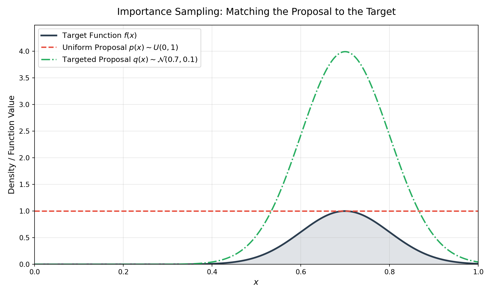
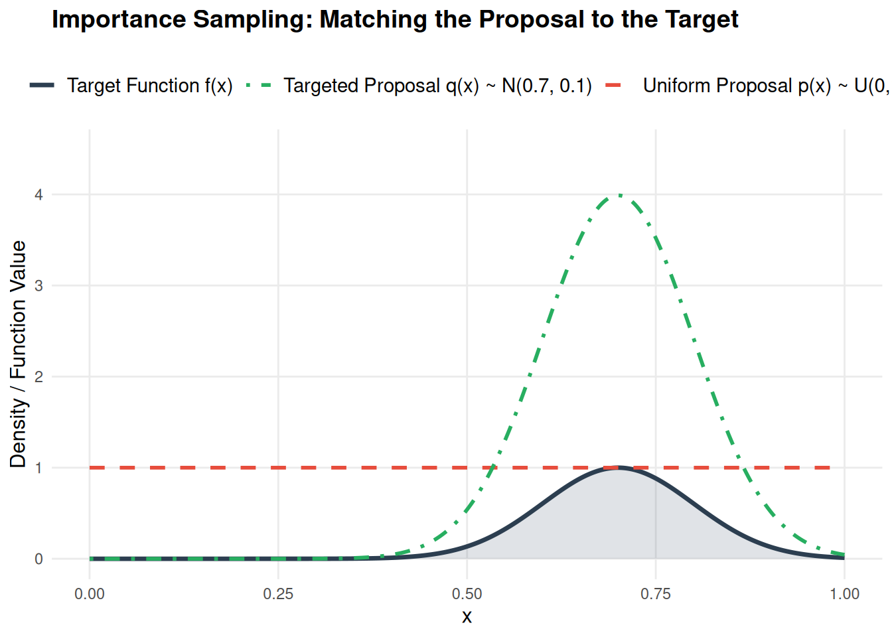

Variance Reduction: A Guide to Importance Sampling and Beyond
Data Science
Probability
Statistical Computing
Python
Mathematics
Author
Anant Kumar
Published
May 22, 2026
Before we dive into variance reduction, let’s briefly anchor ourselves in the core premise of Monte Carlo methods. At its heart, Monte Carlo integration is a powerful numerical technique that uses randomness to solve purely deterministic problems. When an integral is too complex to evaluate analytically, particularly in high-dimensional spaces common in machine learning and physics, we can reframe the problem probabilistically. By treating the integral as the expected value of a random variable, we can simply draw a large number of random samples from a base distribution, evaluate our function at those points, and average the results. Thanks to the Law of Large Numbers, this sample average is mathematically guaranteed to converge to the true integral as the number of samples increases. It is an elegant bridge between calculus and probability.
A Working Example: Uniform Monte Carlo
Let’s ground this with a concrete example. Suppose we want to evaluate the following integral:
\[
I = \int_{0}^{1} e^x \cos(x) dx
\]
Using integration by parts twice, we can evaluate this analytically. The exact antiderivative is \(\dfrac{e^x}{2}(\sin x + \cos x)\), which gives us a true value of:
To solve this probabilistically using a standard Monte Carlo approach, we recognize that the bounds of integration are \(0\) to \(1\). This perfectly matches the probability density function of a standard uniform distribution, \(p(x) = U(0,1)\), where \(p(x) = 1\) for \(x \in [0,1]\).
Therefore, our integral can be rewritten as an expectation:
We can approximate this expectation by simply generating \(N\) random numbers between \(0\) and \(1\), passing them through our function \(f(x) = e^x \cos(x)\), and calculating the mean.
Here is how that looks in Python:
import numpy as np# Set seed for reproducibilitynp.random.seed(42)# Define our functiondef f(x):return np.exp(x) * np.cos(x)# 1. Draw N samples from a Uniform(0, 1) distributionN =100000x_samples = np.random.uniform(0, 1, N)# 2. Evaluate the function at each sampley_samples = f(x_samples)# 3. Compute the mean to get the Monte Carlo estimatemc_estimate = np.mean(y_samples)exact_value =1.378024error =abs(mc_estimate - exact_value)print(f"MC Estimate: {mc_estimate:.6f}")
MC Estimate: 1.377968
print(f"Exact Value: {exact_value:.6f}")
Exact Value: 1.378024
print(f"Absolute Error: {error:.6f}")
Absolute Error: 0.000056
For those working in R, the logic translates perfectly using the runif function to generate our uniform distribution:
# Set seed for reproducibilityset.seed(42)# Define our functionf <-function(x) {exp(x) *cos(x)}# 1. Draw N samples from a Uniform(0, 1) distributionN <-100000x_samples <-runif(N, min =0, max =1)# 2. Evaluate the function at each sampley_samples <-f(x_samples)# 3. Compute the mean to get the Monte Carlo estimatemc_estimate <-mean(y_samples)exact_value <-1.378024error <-abs(mc_estimate - exact_value)cat(sprintf("MC Estimate: %.6f\n", mc_estimate))
MC Estimate: 1.378027
cat(sprintf("Exact Value: %.6f\n", exact_value))
Exact Value: 1.378024
cat(sprintf("Absolute Error: %.6f\n", error))
Absolute Error: 0.000003
With 100,000 samples, this script confidently output an estimate of 1.3780274, matching the exact analytical solution to five decimal places (the R version). The beauty of this approach is its simplicity: we bypassed the calculus entirely using random number generation.
The Breaking Point
Following our exploration of generating standard distributions and utilizing basic Monte Carlo methods, it becomes necessary to address a fundamental limitation of naive random sampling: variance.
When estimating the expected value of a function, a standard Monte Carlo simulation works beautifully if the regions of interest are uniformly distributed. However, what happens when we need to estimate the probability of a rare event, or integrate a function that has narrow, high-frequency peaks? A naive uniform sample will spend most of its computational cycles evaluating regions that contribute almost nothing to the final result.
In this post, we will build up the mathematics of Importance Sampling and Weighted Importance Sampling, demonstrating how changing our sampling distribution can drastically optimize computational performance.
The Standard Monte Carlo Estimator
Let’s quickly formalize the standard Monte Carlo integration. Suppose we want to evaluate the expectation of a function \(f(x)\) where \(x\) is a random variable distributed according to a probability density function \(p(x)\):
\[\mu = \mathbb{E}_p[f(x)] = \int f(x)p(x) dx\]
The standard Monte Carlo estimator approximates this by drawing \(N\) independent and identically distributed (i.i.d.) samples from \(p(x)\):
By the Law of Large Numbers, \(\hat{\mu}_{MC}\) converges to \(\mu\) as \(N \to \infty\). However, the variance of this estimator is \(\dfrac{\text{Var}_p(f(x))}{N}\). If \(f(x)\) is highly localized and \(p(x)\) is broad (like a uniform distribution), the variance explodes. We need a way to force our algorithm to sample the “important” regions more frequently.
Importance Sampling: Changing the Measure
Importance Sampling isn’t just a computational trick; it is a fundamental algebraic manipulation. We can multiply and divide our integrand by a new, arbitrary proposal distribution \(q(x)\), provided that \(q(x) > 0\) wherever \(f(x)p(x) \neq 0\):
The term \(w(x_i) = \dfrac{p(x_i)}{q(x_i)}\) is called the likelihood ratio or importance weight. It corrects the bias introduced by sampling from \(q(x)\) instead of \(p(x)\). If we sample from a region where \(q(x)\) is artificially high, the weight \(w(x)\) becomes small, balancing the scale.
The optimal proposal distribution \(q^*(x)\) is actually proportional to \(|f(x)|p(x)\). While we rarely know the exact normalization constant to use \(q^*(x)\) perfectly, choosing a \(q(x)\) that loosely mimics the shape of \(|f(x)|p(x)\) will result in massive variance reduction.
Weighted Importance Sampling (Self-Normalized)
A practical issue arises when the target distribution \(p(x)\) is known only up to a normalizing constant (a common scenario in Bayesian inference and Markov Chain Monte Carlo). If we cannot compute \(p(x)\) exactly, we can use the unnormalized target \(\tilde{p}(x) = Z_p p(x)\).
The weights become unnormalized: \(\tilde{w}(x_i) = \dfrac{\tilde{p}(x_i)}{q(x_i)}\). We estimate the normalizing constant by averaging these unnormalized weights, leading to the Weighted (or Self-Normalized) Importance Sampling estimator:
While \(\hat{\mu}_{WIS}\) introduces a slight bias for finite \(N\), it is asymptotically consistent and often exhibits lower variance than standard Importance Sampling, especially when the proposal distribution \(q(x)\) is imperfectly scaled.
A Python Implementation
Let’s visualize this with a concrete example. We will integrate a narrow Gaussian peak using a broad Uniform proposal vs. a targeted Gaussian proposal.
import numpy as npimport matplotlib.pyplot as pltfrom scipy.stats import norm, uniformnp.random.seed(42)# Target function: a narrow peakdef f(x):return np.exp(-50* (x -0.7)**2)# p(x) is standard uniform [0, 1]# We want to integrate f(x) from 0 to 1N =5000# 1. Standard Monte Carlo (Sampling from Uniform p)x_mc = np.random.uniform(0, 1, N)y_mc = f(x_mc)mu_mc = np.mean(y_mc)var_mc = np.var(y_mc) / N# 2. Importance Sampling (Sampling from Gaussian q centered at 0.7)# Proposal q(x) ~ N(0.7, 0.1)q_dist = norm(loc=0.7, scale=0.1)x_is = q_dist.rvs(N)# p(x) is 1 everywhere in [0,1], 0 otherwise. # We filter out samples outside [0, 1] for exactness, though most fall inside.valid_idx = (x_is >=0) & (x_is <=1)x_is = x_is[valid_idx]# Importance weights w(x) = p(x) / q(x)# p(x) = 1 for these valid samplesw_x =1.0/ q_dist.pdf(x_is)y_is = f(x_is) * w_xmu_is = np.mean(y_is)var_is = np.var(y_is) /len(x_is)print(f"Standard MC Estimate: {mu_mc:.5f} (Variance: {var_mc:.5e})")
Standard MC Estimate: 0.25221 (Variance: 2.31050e-05)
# --- Visualizing the Distributions ---# Generate points for the x-axisx_plot = np.linspace(0, 1, 1000)# Calculate the target function and proposal distributionsy_target = f(x_plot)y_uniform_proposal = uniform.pdf(x_plot, loc=0, scale=1)y_gaussian_proposal = q_dist.pdf(x_plot)# Create the plotplt.figure(figsize=(10, 6))# Plot the target function (scaled for visibility against the PDFs if needed, # though here they share a reasonable y-range)plt.plot(x_plot, y_target, color='#2c3e50', linewidth=2.5, label=r'Target Function $f(x)$')# Plot the Uniform Proposal p(x)plt.plot(x_plot, y_uniform_proposal, color='#e74c3c', linestyle='--', linewidth=2, label=r'Uniform Proposal $p(x)\sim U(0,1)$')# Plot the Gaussian Proposal q(x)plt.plot(x_plot, y_gaussian_proposal, color='#27ae60', linestyle='-.', linewidth=2, label=r'Targeted Proposal $q(x)\sim \mathcal{N}(0.7, 0.1)$')# Fill the area under the target function to emphasize the "mass"plt.fill_between(x_plot, y_target, color='#34495e', alpha=0.15)# Formatting the plotplt.title('Importance Sampling: Matching the Proposal to the Target', fontsize=14, pad=15)plt.xlabel('$x$', fontsize=12)plt.ylabel('Density / Function Value', fontsize=12)plt.xlim(0, 1)
(0.0, 1.0)
plt.ylim(0, max(y_gaussian_proposal) +0.5)
(0.0, 4.489404815693529)
plt.legend(loc='upper left', fontsize=11)plt.grid(True, alpha=0.3)plt.tight_layout()# Render the plotplt.show()

If you want an R implementation, here it is:
set.seed(42)# Target function: a narrow peakf <-function(x) {exp(-50* (x -0.7)^2)}N <-5000# 1. Standard Monte Carlo (Sampling from Uniform p)x_mc <-runif(N, min =0, max =1)y_mc <-f(x_mc)mu_mc <-mean(y_mc)var_mc <-var(y_mc) / N# 2. Importance Sampling (Sampling from Gaussian q centered at 0.7)# Proposal q(x) ~ N(0.7, 0.1)x_is_raw <-rnorm(N, mean =0.7, sd =0.1)# p(x) is 1 everywhere in [0,1], 0 otherwise. # Filter out samples outside [0, 1] for exactnessx_is <- x_is_raw[x_is_raw >=0& x_is_raw <=1]# Importance weights w(x) = p(x) / q(x)# p(x) = 1 for these valid samplesw_x <-1.0/dnorm(x_is, mean =0.7, sd =0.1)y_is <-f(x_is) * w_xmu_is <-mean(y_is)var_is <-var(y_is) /length(x_is)# Print resultscat(sprintf("Standard MC Estimate: %.5f (Variance: %.5e)\n", mu_mc, var_mc))
Standard MC Estimate: 0.25145 (Variance: 2.29823e-05)
# Load the required visualization librarylibrary(ggplot2)# Generate points for the x-axisx_plot <-seq(0, 1, length.out =1000)# Calculate the target function and proposal distributionsf_target <-function(x) { exp(-50* (x -0.7)^2) }y_target <-f_target(x_plot)y_uniform_proposal <-dunif(x_plot, min =0, max =1)y_gaussian_proposal <-dnorm(x_plot, mean =0.7, sd =0.1)# Assemble into a data frame for ggplot2plot_data <-data.frame(x = x_plot,Target = y_target,Uniform = y_uniform_proposal,Gaussian = y_gaussian_proposal)# Create the plotggplot(plot_data, aes(x = x)) +# Fill the area under the target function to emphasize the "mass"geom_ribbon(aes(ymin =0, ymax = Target), fill ="#34495e", alpha =0.15) +# Plot the Target functiongeom_line(aes(y = Target, color ="Target Function f(x)"), linewidth =1.2) +# Plot the Uniform Proposal p(x)geom_line(aes(y = Uniform, color ="Uniform Proposal p(x) ~ U(0,1)"), linetype ="dashed", linewidth =1) +# Plot the Gaussian Proposal q(x)geom_line(aes(y = Gaussian, color ="Targeted Proposal q(x) ~ N(0.7, 0.1)"), linetype ="dotdash", linewidth =1) +# Map the colors exactly as they were in Matplotlibscale_color_manual(name =NULL,values =c("Target Function f(x)"="#2c3e50","Uniform Proposal p(x) ~ U(0,1)"="#e74c3c","Targeted Proposal q(x) ~ N(0.7, 0.1)"="#27ae60" ) ) +# Labels and scalinglabs(title ="Importance Sampling: Matching the Proposal to the Target",x ="x",y ="Density / Function Value" ) +coord_cartesian(xlim =c(0, 1), ylim =c(0, max(y_gaussian_proposal) +0.5)) +# Apply a clean, minimal themetheme_minimal() +theme(plot.title =element_text(size =14, face ="bold", margin =margin(b =15)),axis.title =element_text(size =12),legend.position ="top",legend.text =element_text(size =11),panel.grid.minor =element_blank() )

Conclusion: From Brute Force to Finesse
Ultimately, the transition from standard Monte Carlo to Importance Sampling represents a shift from brute-force computation to mathematical finesse. Basic uniform sampling treats all regions of an integral equally, which is wildly inefficient when dealing with localized peaks or rare events. By purposefully changing our measure and utilizing a proposal distribution \(q(x)\), we stop wasting computational cycles on empty space and force our algorithms to focus exactly where the function holds the most weight.
However, Importance Sampling comes with its own caveat: it requires us to manually design a good proposal distribution. While this is straightforward for a 1D Gaussian peak, guessing the shape of \(q(x)\) becomes notoriously difficult in high-dimensional spaces or when the target distribution has complex, multimodal geometries.
So, what do we do when we can’t analytically construct a good proposal distribution upfront?
In our next post, we will address this exact limitation by moving beyond independent, identically distributed samples. We will explore how to let the algorithm find the important regions dynamically by simulating Markov Chains, building our way up to the Metropolis-Hastings algorithm from scratch.